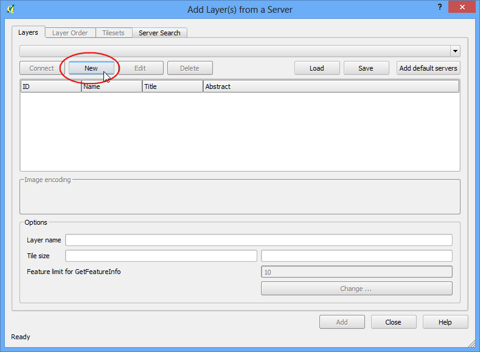
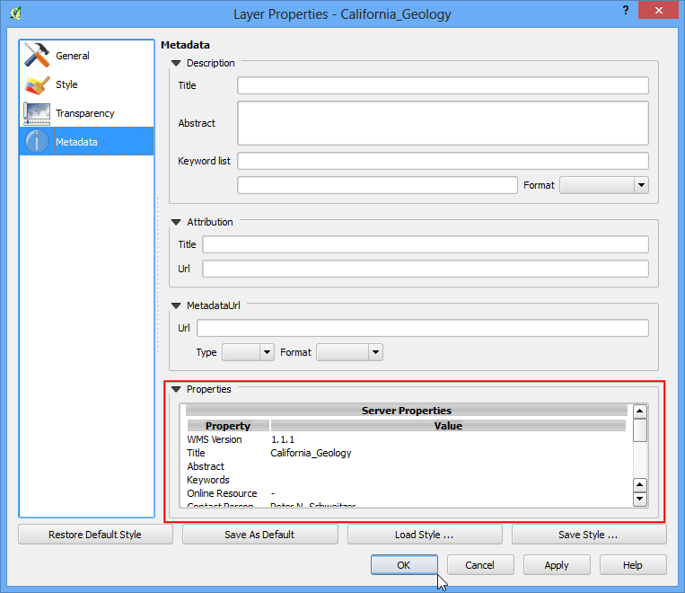

Working with WMS Data¶
Often you need reference data layers for your basemap or to display your results in the context of other datasets. Many organizations publish datasets online that can be readily used in GIS. A popular standard for publishing maps online is called WMS (Web Map Service). This is a better choice for using reference layers as you get access to rich datasets in your GIS without the hassle of downloading or styling the data.
Overview of the task¶
In this tutorial, we will load layers of Mineral Resources published by USGS.
Procedure¶
- Open QGIS and go to on Layer ‣ Add WMS Layer....

- In the Layers tab, click on New.

- Name your connection. This is not the name of the layer but the name of service which is offering the WMS layer. A single service usually offers multiple layers that can be added to your project. The URL that you need to access a WMS layer is called GetCapabilities. When you access a WMS server with this parameter in the URL, it returns a list of layers available along with various metadata. In this case, name the connection as MRDATA USGS and the GetCapabilities URL as http://mrdata.usgs.gov/services/ca?request=getcapabilities&service=WMS&version=1.1.1&. Click OK.

- Next, click on the Connect button to fetch the list of layers available. You will notice different IDs listed next to the layers. ID 0 means you get a map of all the layers. If you do not want all the layers, you can expand the list by clicking on + icon and selecting the layer of interest. Selet the layer 0 for this tutorial.

In the Image encoding section, you need to choose an image format. Image formats matter a great deal and which one you choose depends on your use case. Here are some pointers
- Quality: PNG is a lossless compressed image format. JPEG is lossy compressed format. TIFF can be either. That means the quality of PNG images will be better compared to JPEG. if your main purpose is to print a map, use PNG.
- Speed: Since PNG images are uncompressed and thus larger in size, they will take longer to load. If you are using the layer in your project as a reference layer and need to zoom/pan a lot, use JPEG.
- Client Support: QGIS supports most of the formats, but if you are developing web applications, browsers usually do not support TIFF, so you should choose another format.
- Type of data: If your layers are primarily vector, PNG will give better results. For imagery layers, JPEG is usually a better choice.
For this tutorial, choose JPEG as the format. Change the Layer name if you wish and click Add.

- You will see the layer loaded in the QGIS canvas. You can zoom/pan around just like any other layer. The way WMS service works is that every time you zoom/pan, it sends your viewport coordinates to the server and the server creates an image for that viewport and return it to the client. So there will be some delay before you see the image for the area after you have zoomed in. Also, since the data you see is an image, there is no way to query for attributes like in a regular vector/imagery layer.

- You can, however, see some metadata about the layer. Right-click the layer and choose Properties.

- You will notice that the Properties dialog looks different and has fewer tabs. You can go to the Metadata tab to learn more about the WMS service and the layers.
